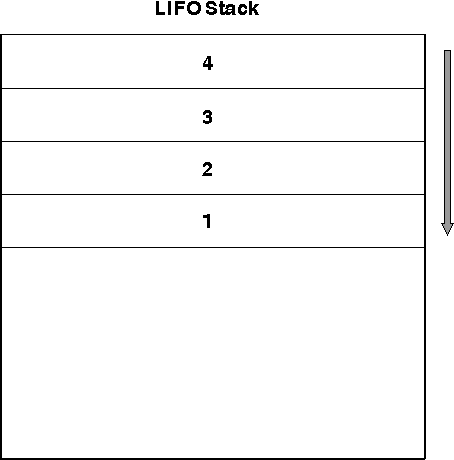

GpiRestorePS retrieves the saved information from the LIFO stack and reapplies it to the presentation space. Input to this function can be either the identifier returned to you from GpiSavePS or a relative value. A relative value of -1, for example, retrieves the information most recently stored on the stack. You do not have to restore the information that was most recently saved. However, any data that you skip over is discarded.

A LIFO Stack with Four Items